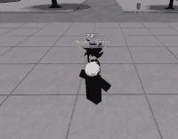
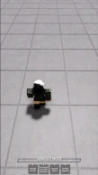

Algo que tienes que saber y tener en practica es como poder usar las mecanicas basicas del juego (moverte, defenderte y atacar) por ende aqui te muestro todo lo basico para que lo apliques a cualquier personaje y progresar como jugador.
Movimientos basicos:
los M1 o golpes son los ataques basicos los cuales lanzas al dar CLICK IZQUIERDO, estos tienen 4 variantes:
Golpes normales:
Es una serie de cuatro golpes consecutivos los cuales empujan al rival, el cuarto golpe empuja al enemigo derribandolo
(hacer 4 clicks izquierdos o mantener el click)

Golpes con uppercut
Serie de cuatro golpes que finalizan con un uppercut(cuarto golpe) mandando al rival al aire
(3 clicks izquierdos luego mantener espacio y dar el ultimo golpe)

Golpes con patada entierro
Serie de cuatro golpes que finalizan con una pata de arriba para abajo que entierran al rival
(3 cliks izquierdos luego un salto y en el aire un ultimo click)
Combo paret
Solo se puede ejecutar este movimiento si es que el rival esta serca de una estructura, este combo es diferente para cada personaje
(si el rival esta serca de una paret, dar 4 golpes y luego de una pausa muy pequeña presionar Q)

El "dash" o "carrera" es un movimiento frontal el cual el persoanje da una carrera con un golpe preparado, este movimiento es usado para enganchar al oponente en un combo o para extender el como pero esto ultimo es mas dificil, este movimiento se hace simplemente en precionar la letra Q, este movimiento tiene 4 variantes
Dash acometida
Movimiento frontal de atauqe
(se ejecuta con la letra Q)

Side-dash(carrera lateral)
Movimento evasivo como ofensivo que se usa en jecutar combos, evadir guardia y esquivar
(side-dash a la derecha Q+D, side-dash a la izquierda Q+A)
Backdash
movimiento evasivo como ofensivo, se usa mas para esquivar ataques en general
(se ejecuta con Q+S)

Ragdoll cancel
Este movimiento sirve para escapar de algun combo o recuperarte rapido luego de ser derribado
(es como un side-dash ,se ejecuta de la misma manera Q+A o Q+D, tiene una carga de 30 segundos)
La defensa es crucial en combate por eso hay que tenerla en cuenta y no dejarla a un lado, usa F para cubrirte , bloquear no solo sirve para evitar daño si no tambien para devolverlo pero es aglo mas complejo, tiene 3 variantes
Bloquear
Es una mecanica la cual evita que sufras daño
(manten precionado la F)
Parry
Se trata de bloquear en el ataque en el momento preciso, luego de hacer un parry perfecto puedes lanzar un golpe y este sera critico
(teclear la F en antes de recibir el ataque y soltar l tecla F)
Black Flash
Una mecanica muy dificil de hacer en situaciones de combate en el juego hacia otros jugadores, es un contrataque que hace un 10% mas de daño que un golpe normal
(se logra despues de hacer 2 parrys de manera perfecta y consecutiva, luego de hacer los 2 parrys perfectamente lanzas un golpe y este saldra cargado sacando un black flash)
.
Continuar:
inicio de pagina
Personajes
Pro-tips
.